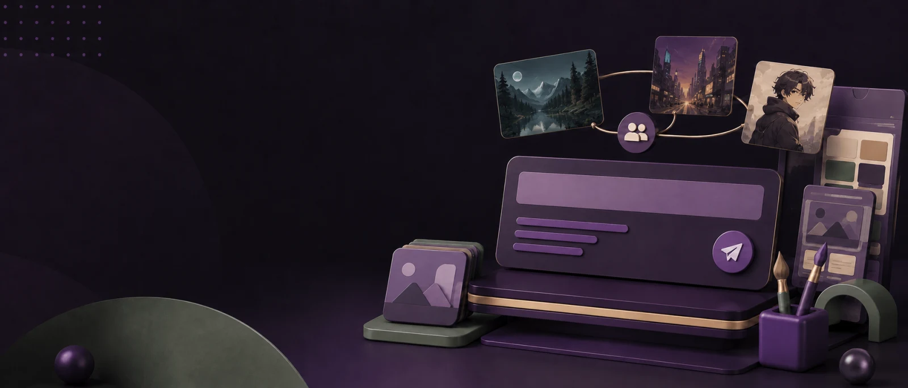

进行中Prompt 共创计划
开始：以接口返回为准结束：以接口返回为准
我的参与状态
0/3
活动说明
DESCRIPTION发布可复用的 Prompt 作品，并按本期发布配置补充内容类型、媒体、模型与场景信息。
Prompt 在真实 C 端仍属于作品；活动页、发布组件与作品详情共同承接投稿和复用，不新增独立 Prompt 业务路由。
活动任务
TASK LIST发布 Prompt 作品
待完成+20 积分先获取参与上下文，再进入生成或直接发布组件。
进度 0 / 1补充使用案例
进行中+40 积分媒体类型和数量读取 publish_config，不在活动页固化。
进度 0 / 1获得精选或推荐
未解锁状态与奖励均以活动任务响应为准。
进度 0 / 1活动投稿
SUBMISSIONS
国风角色海报 Prompt
文本作品 · 山岚

棚拍产品图 Prompt
文本作品 · 白昼

短片分镜拆解 Prompt
文本作品 · 青屿